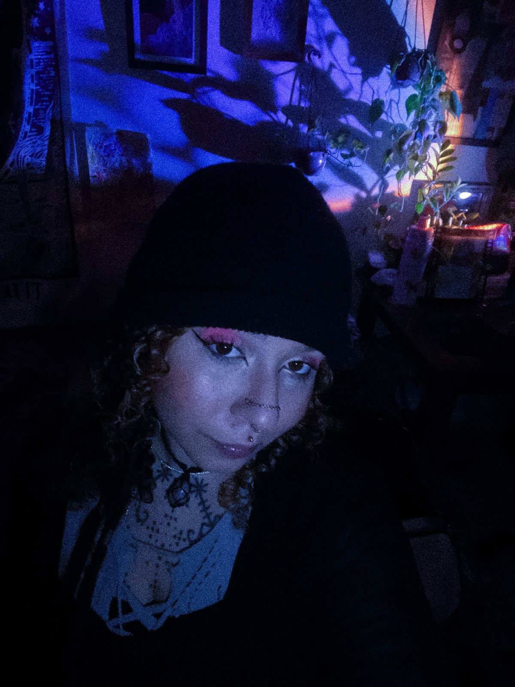

Consultas online de tarot
Um espaço para consultas oraculares. Olhar para dentro com cuidado e acolhimento para os próximos passos.
Quem sou eu

Trabalho com tarot há seis anos, como prática de autoconhecimento e orientação. Não como adivinhação, mas como ferramenta de reflexão. Cada sessão é construída em conjunto: você traz a pergunta, as cartas trazem a imagem, e a gente interpreta juntos.
Você pode me interromper, questionar, aprofundar. A tiragem é nossa: minha leitura encontra a sua percepção.
Consultas
Uma pergunta direta ao tarot. Você recebe foto das cartas que saíram + áudio com minha interpretação. Rápida, prática e certeira — ótima porta de entrada.
A gente interpreta as cartas juntos, em tempo real. Você pode me interromper, tirar dúvidas e aprofundar o que surgir. A tiragem é conjunta — minha leitura e a sua percepção se encontram.
Tem mais de uma coisa na cabeça? Conseguimos fazer um valor menor por pergunta adicional. Me conta o que você precisa e a gente alinha.
Precisa ser atendida com mais rapidez? A taxa de emergência garante prioridade na fila — acrescente ao valor da sua consulta e me avise.
Uma sessão mais longa, sem tema fixo — você pergunta o que quiser ao longo do encontro. Espaço para explorar diferentes áreas da vida com calma e profundidade.
Os valores refletem não só o meu trabalho, mas também os materiais que uso em cada sessão: velas, incensos e tudo que compõe essa troca, para que a energia esteja bem direcionada.
Como funciona
Selecione o tipo de sessão que faz mais sentido pra você e preencha o formulário com seu nome, contato e a pergunta (ou o tema que quer explorar).
Assim que receber seu contato, te respondo confirmando disponibilidade e alinhamos tudo antes da sessão.
Ao vivo, com foto das cartas e áudio interpretando cada uma. Você pode perguntar, questionar e aprofundar à vontade, ou receber a interpretação de forma assíncrona, se preferir.
A interpretação fica com você! Para refletir, revisitar e integrar no seu próprio tempo.
Depoimentos
Os feedbacks são reais! Você pode conferir no destaque do meu Instagram @__gioz
Lembra a leitura que você fez pra mim uns meses atrás? Meio que tudo aconteceu daquela maneira. Me guiou, me deu um direcionamento e me deu coragem. Obrigada, de coração!
via WhatsAppVc falou tudo que tá acontecendo to assim — nua e crua. Me deu um alívio, sabe. Eu amei, amei mesmo.
via WhatsAppPor mais que o objetivo da tiragem não seja dar a "resposta", eu sinto que to acolhida e direcionada.
via WhatsAppTudo fez muito sentido amiga. Sua leitura e interpretação é muito aprofundada e sútil ao mesmo tempo. Amei a consulta com você!
via WhatsAppOntem a Gio fez uma tiragem de tarot pra mim e meu deus, nunca tive tanta confirmação.
via TwitterSenti que foi pra mim mesmo essas cartas. Tem mesmo haver. Ajudou d+. Agr tô mais tranquilo. Vou seguir minha trilha.
via WhatsAppMe ajudou demais, sem dúvidas vou levar comigo esses conselhos. Me esclareceu muito, não tenho dúvidas. Já te indiquei pras minhas amigas!
via WhatsAppTe indicarei de olhos fechados. Gostei da sua interpretação, foi leve, mas foi pontual. Muito obrigada!
via WhatsAppGio, muito obrigada. Vc me ajudou demais. Nossa, não tenho nem como te agradecer.
via WhatsAppAgendamento
Preencha o formulário e entrarei em contato para combinar data, horário e detalhes da sua consulta.